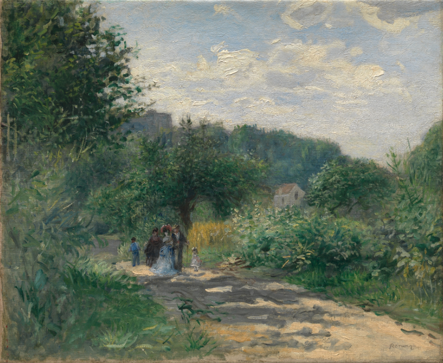
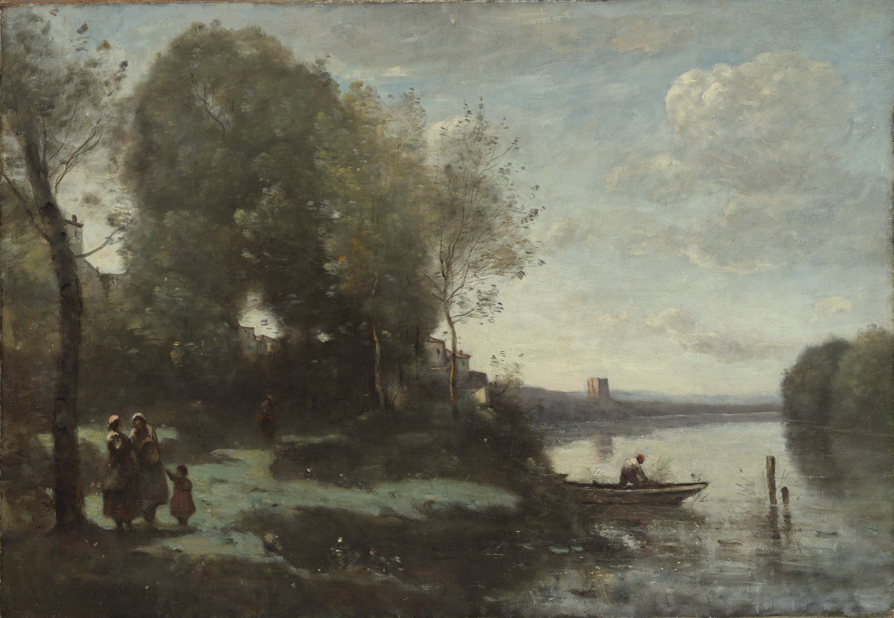

A Road in Laouveciennes
Auguste Renoir, ca. 1870
This picture, which is in effect drawn directly with paint, was
almost certainly executed out-of-doors about 1870. The site is
in the village of Louveciennes, west of Paris, where Camille
Pissarro lived and worked in 1869-70 and was inspired to paint
the same motif, but from a different vantage point (National
Gallery, London). At the time, Renoir was staying nearby with
his parents, who had retired to Voisins.
A Bouquet of Flowers in a Crystal Vase
Nicolaes van Veerendael, 1662
Van Veerendael was influenced by two of the leading flower
painters in Antwerp, Jan Davidsz de Heem and Daniel Seghers. In
this early work the evidence of acute observation seems a legacy
of De Heem's Dutch origins, but the overall design and dwelling
upon botanical details continue the Flemish tradition of Segher's
master, Jan Brueghel the Elder.

River with a Distant Tower
Camille Corot, 1865
The writer Théophile Thoré repeated his habitual criticism of
Corot in 1865, the date of this picture: "Corot almost never
made anything besides the same one landscape, but it is good."
The landscape here was conceived by Corot in his studio from
stock elements that he knew by heart: the cluster of silvery
trees, the body of leaden water, the peasant figures and
boatman, the distant tower. Like his idol Claude Lorrain, Corot
could generate a landscape and a mood through the power of his
imagination.
River with a Distant Tower
Camille Pissarro, 1893
Pissarro felt an affinity for the daily rhythms of peasant life
that he witnessed around his home in the village of Eragny, not
far from Paris. This washerwoman is hard at work, scrubbing
linens and clothing in one barrel and rinsing them in another.
The artist depicted the surrounding landscape with dappled
touches of his brush—a legacy of the Pointillist style that he
adopted in the mid-1880s. To suggest the effect of shimmering
sunlight, he mixed pure yellow paint into the greens of the
grass and trees while the pigment was still wet.